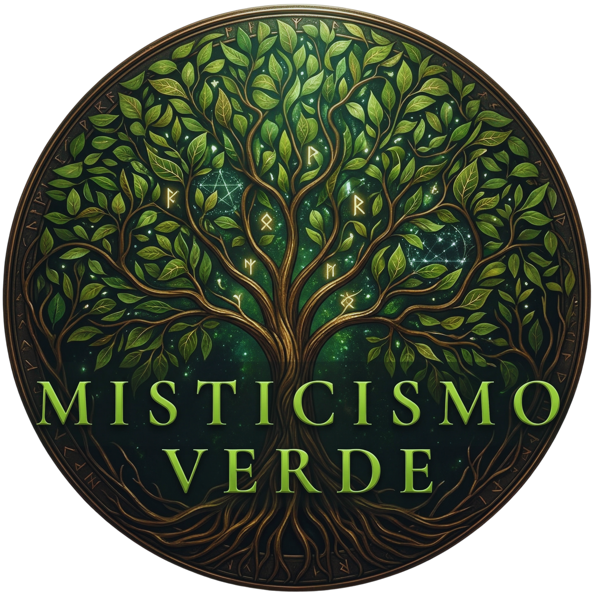

A história por trás do Misticismo Verde — um portal nascido do encontro entre a intuição de uma criança e a sabedoria de duas avós.

"Antes de entender, eu já estava sendo chamada."
Eu tinha seis ou sete anos quando fiz minha primeira "poção". Amassava hibisco com folhas, terra e temperos, sentindo a textura gosmenta escorrer entre os dedos, fria e viva, enquanto uma sensação tomava conta de mim: de que aquilo importava, mesmo sem eu entender por quê. Mexia com a gravidade de quem estava fazendo algo muito sério. Eu estava.
Cresci encantada pelas plantas, observando a natureza com atenção e sentindo, mesmo sem explicar, que ali existia um saber vivo. Foram minhas avós que aprofundaram esse caminho: uma cultivando cuidado mesmo sem quintal, a outra trazendo da Ilha de Tauaré os conhecimentos da terra, plantando, curando e ensinando com as próprias mãos.
Com o tempo, aquilo que era só intuição virou busca. Estudei, vivi e me reconectei com minhas raízes. Dessa jornada nasceu o Misticismo Verde — um espaço para honrar e compartilhar os saberes ancestrais das plantas, especialmente das amazônicas. O Misticismo Verde nasce como ponte. 🌿 Porque a sabedoria das plantas não tem dono. Ela tem guardiões.
Quatro pilares guiam cada produto, cada ritual e cada palavra escrita aqui.
Honrar saberes que atravessaram gerações de curandeiras, benzedeiras e povos originários.
Reconhecer a Amazônia e suas tradições sem apagar ou exotificar quem veio antes.
Nenhum produto sai do nosso viveiro ou bancada sem um gesto consciente de cuidado.
Extrativismo e cultivo sustentável — a natureza como parceira, nunca como recurso a esgotar.
Cada produto do Misticismo Verde carrega um pouco dessa jornada — da infância curiosa até a guardiã que Thai se tornou.